Eau & résilience
Sobriété, eaux pluviales, REUT, ressources non conventionnelles, risques hydriques et adaptation.
- Diagnostic
- Scénarios
- Chiffrage
Annecy · Genève2026
Biologiste et ingénieur en environnement, je conçois et accompagne des projets à l'interface de l'eau, de la biodiversité, du climat, des territoires et des Objectifs de développement durable. Avec Green Spheres, je transforme ces enjeux en diagnostics, stratégies et projets opérationnels.
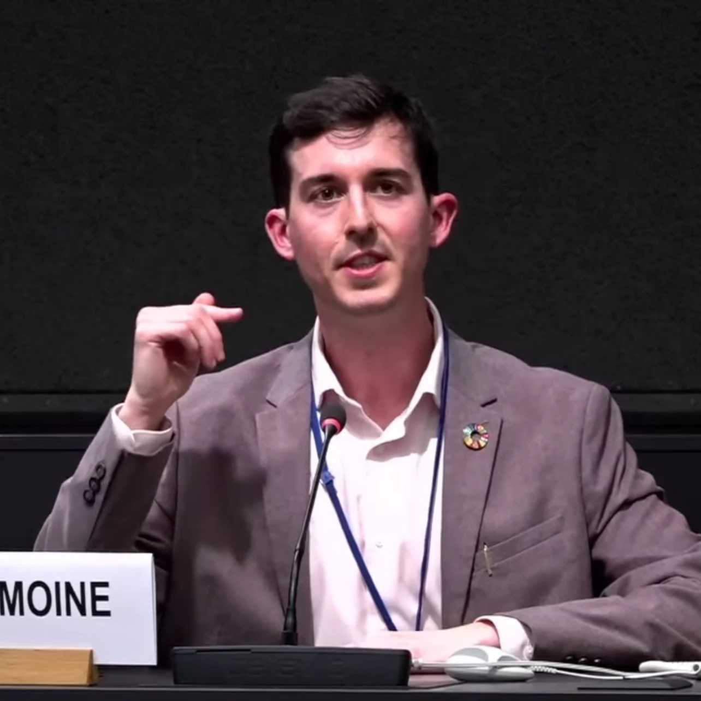
SCIENCE
×TERRAIN
×TERRITOIRES
×COOPÉRATION
01 · Approche
Une décision sur l'eau peut modifier la biodiversité, le confort d'été, l'énergie, les usages ou les coûts. Mon approche consiste à comprendre ces dépendances, à hiérarchiser les risques puis à construire une trajectoire réaliste.
Sobriété, eaux pluviales, REUT, ressources non conventionnelles, risques hydriques et adaptation.
Renaturation, continuités écologiques, services écosystémiques, usages des sols et pollutions.
Bilans carbone, vulnérabilités, adaptation, RSE et feuilles de route pour entreprises et territoires.
Partenariats, conférences, pédagogie et mise en dialogue d'acteurs autour de l'Agenda 2030.
02 · Projets
Des projets qui mobilisent des compétences différentes : ingénierie environnementale, recherche appliquée, coordination, sensibilisation et coopération internationale.
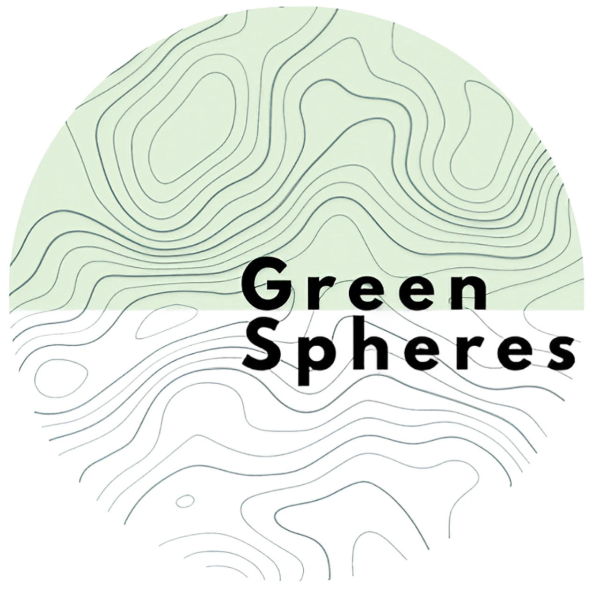
Conseil · bureau d’études · territoires
J'ai cofondé Green Spheres pour relier eau, biodiversité, climat, sols, adaptation et usages dans des diagnostics, stratégies et projets opérationnels pour entreprises et territoires.
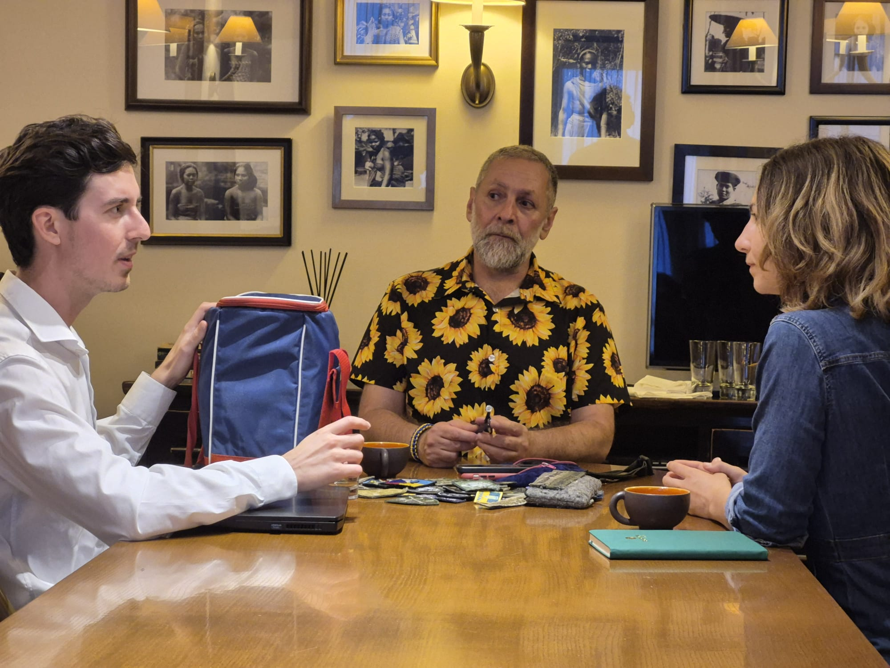
Avec AI‑ODD, Green Spheres et des partenaires locaux, nous avons coordonné une campagne exploratoire à Zaporijjia : prélèvements sur deux zones urbaines, analyses de métaux, métalloïdes et HAP, puis interprétation environnementale des résultats.
Le projet documente aussi les limites très concrètes d’une étude menée en contexte de guerre : accès au terrain, conservation au froid, transport international, casse d’échantillons et représentativité limitée.
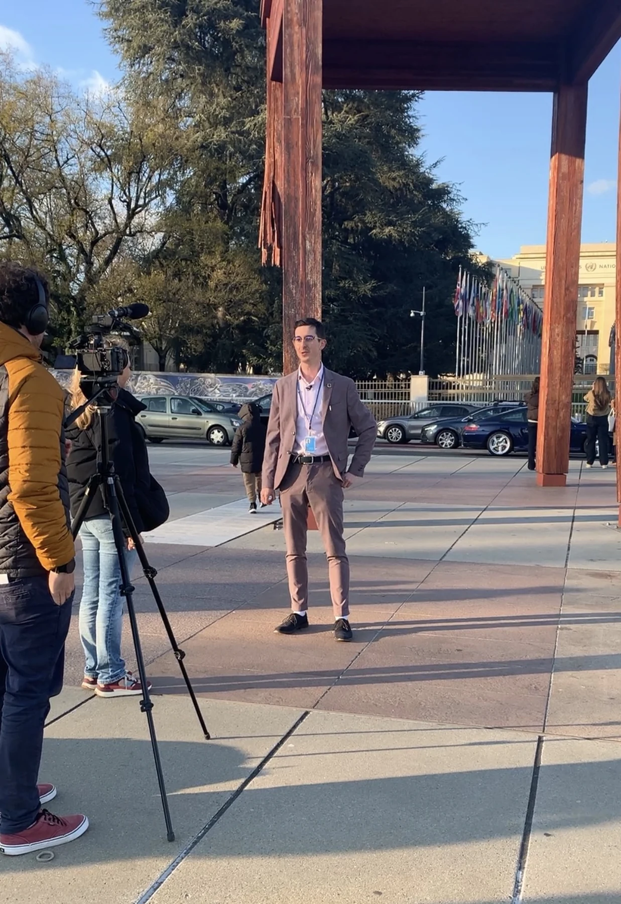
Peace Stories suit pendant un an sept jeunes engagés dans des actions pour la paix. J'y porte notamment le lien entre environnement, pollutions de guerre, territoires et construction de la paix.
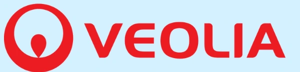
Optimisation de la gestion de l'eau de grands consommateurs, diagnostics d'usages et étude de ressources non conventionnelles pour des usages territoriaux.
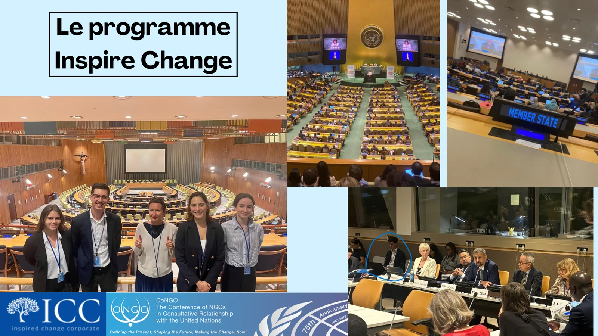
Recherche prospective sur les liens entre ressource en eau, déplacements environnementaux et vulnérabilités territoriales, avec participation à des conférences internationales et formations UNITAR.
La modélisation 3D et la VR deviennent des outils de concertation : explorer un site, comparer des scénarios, tester des usages et rendre un projet environnemental plus concret avant sa réalisation.
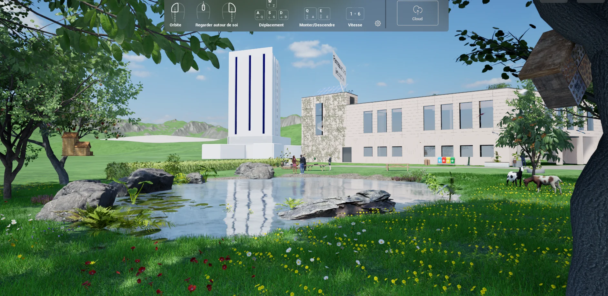
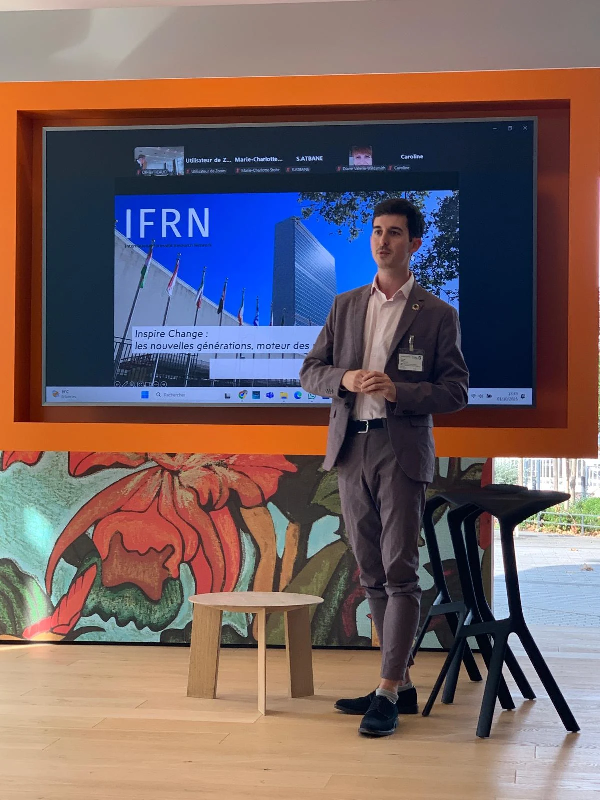
03 · Nations Unies
Le 2 avril 2026, j'ai pris la parole au Palais des Nations à Genève lors de l'événement « Réinventons la paix avec les jeunes », organisé avec l'Alliance Internationale pour les Objectifs de Développement Durable (AI‑ODD), dans un panel consacré à l'IA éthique et altruiste.
 Vice-président · relations externes & partenariats
Vice-président · relations externes & partenariats
Préserver les conditions de vie, les ressources et les écosystèmes, c'est aussi réduire des vulnérabilités qui alimentent les tensions.
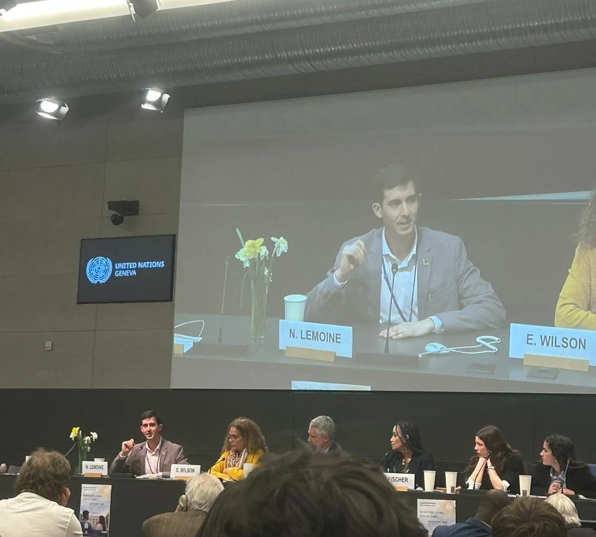
04 · Parcours
Un parcours construit entre science, ingénierie, entrepreneuriat et coopération : comprendre les données, agir sur le terrain et faire travailler ensemble des acteurs aux attentes différentes.
BTS Analyses biologiques et biotechnologiques, Licence SVT puis Master Biodiversité, Écologie & Évolution à l'UCO Angers.
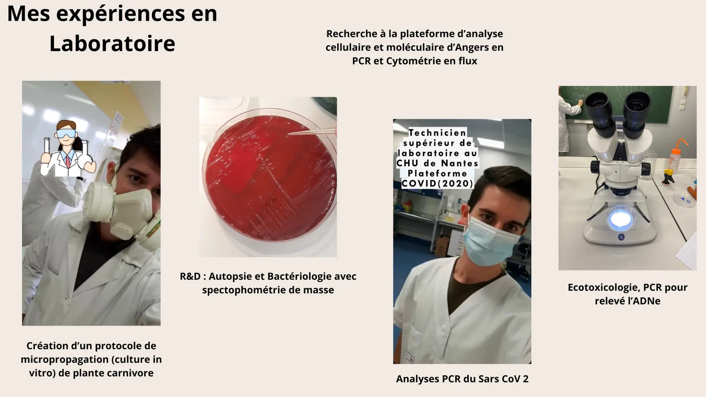
Audits, études de consommations, eaux non conventionnelles, cartographie, usages et solutions d'économie circulaire.
Relations externes et partenariats, événements, conférences, ateliers et mobilisation d'acteurs.
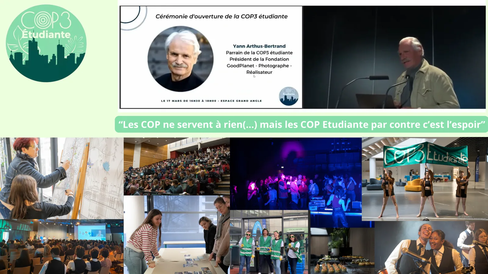
Programme InspireChange d’Inspired Change Corporate : immersion à New York, conférences internationales, formations UNITAR et recherche sur les ODD.
Développement de projets d'ingénierie environnementale et d'une approche systémique des territoires.
05 · Coopérations & engagements
Des engagements complémentaires : partenariats internationaux, documentaire, recrutement de jeunes talents et diffusion d’outils pour mieux utiliser les ODD.
Vice-président chargé des relations externes et des partenariats : développement de coopérations autour des ODD, des territoires, de la jeunesse et de projets internationaux.
Après avoir participé au programme en 2024, je recrute aujourd’hui des étudiants et jeunes diplômés : présentation du parcours, identification de profils et mise en relation pour cette immersion internationale autour des ODD.

Je contribue à faire connaître une approche systémique de l’Agenda 2030 et les applications 4allSDGs, conçues pour aider à évaluer les effets positifs et négatifs d’un projet ou d’une politique au regard des cibles des ODD.
Ces outils gratuits permettent de dépasser la simple association d’un projet à quelques logos ODD : ils invitent à regarder les contributions, les interactions et les impacts négatifs possibles sur l’ensemble de l’Agenda 2030.
Comprendre la méthodologie 4allSDGs ↗Premières expérimentations
Ces travaux plus anciens montrent l’évolution de mes méthodes : médiation scientifique, prospective environnementale et premières expérimentations immersives.
Projet de médiation scientifique mené en Master autour de Loire Sentinelle : ADN environnemental, micro- et nanoplastiques, biodiversité et sensibilisation le long de la Loire.
Archive d'une visualisation de scénarios environnementaux.
06 · Contact
Étude environnementale, coopération, conférence, atelier, territoire régénératif ou projet international.
lemoinenathan6@gmail.com LinkedIn Suivre mes projets, prises de parole et actualités nathan-lemoine-377b2515b ↗Annecy · Auvergne-Rhône-Alpes · bassin genevois